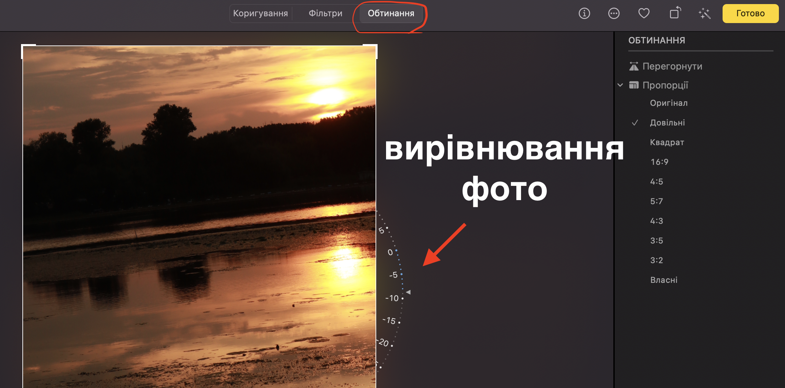

При роботі з фото на макбуці іноді виникає потреба вирівняти фото з "заваленим горизонтом", вирівняти фото по горизонталі. Це можна зручно зробити за допомогою вбудованої програми Фотографії на мак.
Вирівняти горизонт фото в програмі "Фотографії"
Програма Фотографії є стандартною вбудованою програмою на мак для перегляду та редагування фотографій.
Щоб вирівняти зображення відкрийте його в програмі "Фотографії". 
- Натисніть "Редагувати" в верхньому правому куті екрану.

В верхньому меню оберіть вкладку "Обтинання"
З правого боку зображення з'явиться полукруг з позначеними градусами наклону. За допомогою мишки або тачпаду клікніть і утримуйте в зоні цього меню та повертайте фото провівши курсор вверх або вниз до того часу, поки горизонт не стане прямим.
Натисніть кнопку "Готово" щоб зберігти зміни або натисніть "Відновити оригінал" (зліва у верхньому меню на рівні кнопки "Готово"), щоб відмінити зміни.

Вирівнювання горизонту може вдосконалити візуальну якість вашого зображення та зробити його більш професійним та зрозумілим.
Ось кілька випадків, коли вирівнювання горизонту фото може бути корисним:
Якщо на фото присутня горизонтальна лінія, вона повинна бути прямою, щоб зображення виглядало більш симетричним та збалансованим.
Якщо фото було зроблено під час руху або з трясучим руками, горизонт може бути наклонений, що робить зображення важким для розгляду.
Якщо фото містить будівлі або інші вертикальні елементи, вирівнювання горизонту може допомогти зберегти пропорції та форму об'єктів на фото.
Читайте більше статей про редагування зображень на сторінці Робота з зображеннями на мак